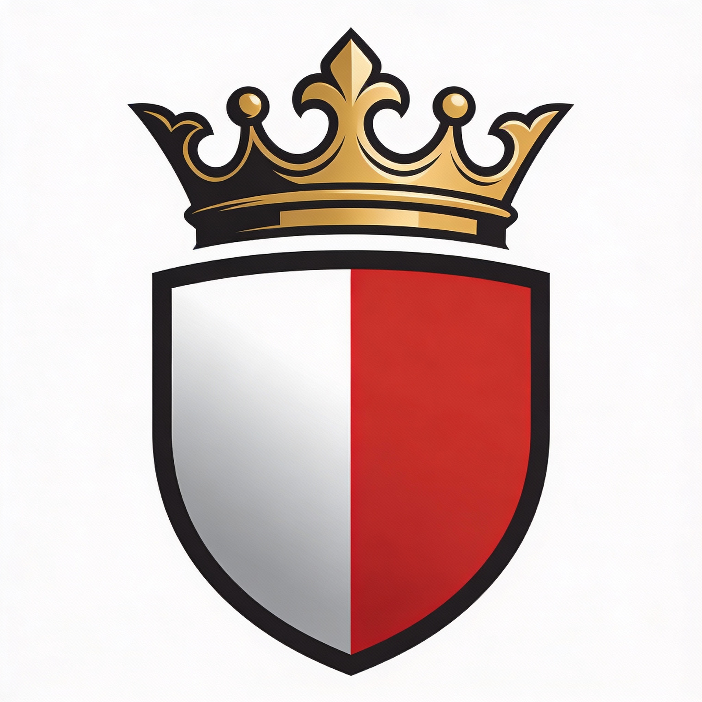

Since 2024
Abbiamo portato il sole
Tutto è iniziato con una valigia piena di taralli e una nostalgia terribile. Quando ci siamo trasferiti a Londra, amavamo tutto di questa città, tranne una cosa: la pizza non aveva quel sapore di "casa".
A Bari, il cibo non è benzina per il corpo. È una religione. È il profumo della focaccia alle 10 del mattino nei vicoli di San Nicola. È il rito della Peroni ghiacciata sul lungomare.
"Non volevamo aprire solo una pizzeria. Volevamo aprire un'ambasciata."
Il nostro impasto lievita per almeno 72 ore. Se hai fretta, mangia un sandwich.
Burrata, pomodori e farina arrivano direttamente dalla Puglia ogni settimana. Niente imitazioni.
Sembra una frase fatta, ma se il pizzaiolo è arrabbiato, la pizza non esce buona. È scienza.
Founder & Barese DOC
Si lamenta del clima inglese 365 giorni l'anno. Controlla la qualità della focaccia ogni mattina.

Head Pizzaiolo
Le sue mani sono patrimonio dell'UNESCO. Non parlargli mentre stende la pasta.

Manager
L'unica che riesce a mettere ordine nel caos pugliese. Sommelier di vini del Salento.